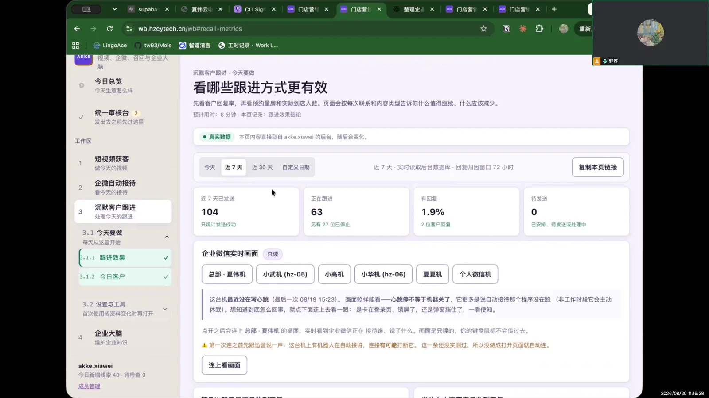
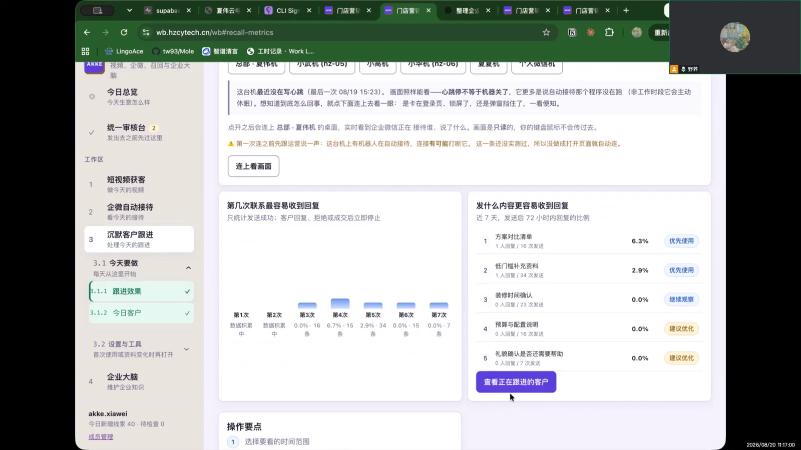
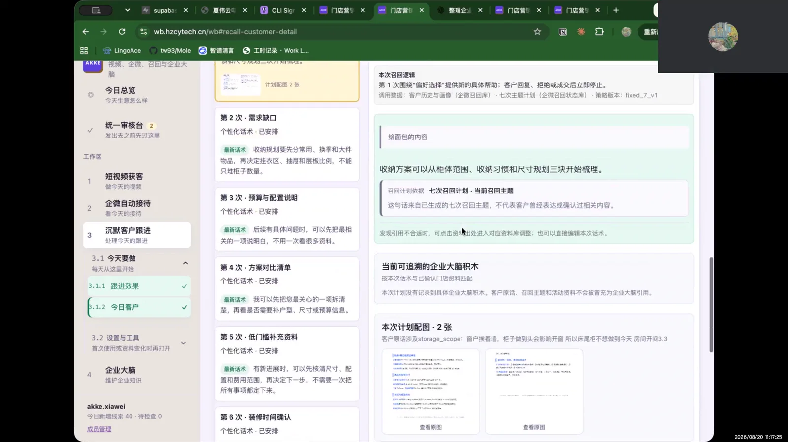

结论摘要
用户没有遇到“操作失败”，但也没有完成核心任务。页面让她看到周期和功能已经设定，却没有清楚告诉她为什么此刻需要介入。
0完整完成的跟进动作
1明确看懂的机制：周期
1未打开的客户详情
0明确操作问题
不要误读：用户说“操作没什么问题”不等于该模块已被验证好用。更准确的结论是：她只浏览了预设功能，没有发起召回、检查客户详情或评价个性化话术。
页面与操作逐步还原
06:05
进入浏览打开沉默客户跟进
访谈者请用户还原进入该页面后的操作。用户第一反应是“这个我没怎么操作”。
06:15
功能理解看到了预设周期和召回能力
用户理解页面有设定好的时间周期，系统会按周期召回一部分客户；她把它看作已经配置好的功能。
06:26
未能还原没有具体点击步骤
访谈者再次追问“你怎么点的”，用户仍说明没有怎么操作，只是看了一下功能。
06:45
主观判断认为周期已设定，操作没有问题
这是一种基于浏览的判断，不是基于完成任务后的判断；录像中没有排计划、加入队列或停止跟进动作。
06:52
未打开没有点进客户详情
访谈者指向可点击的客户入口，用户确认“这个我没点进去看”。
07:01
访谈者说明详情可查看客户情况和个性化召回话术
访谈者解释，点进去可以看用户当前情况与个性化召回话术，并希望用户以后评价哪些地方不好，以便优化。
访谈中具体问了什么
进入“沉默客户跟进”后，是怎样操作和使用的？
页面里看到的时间周期和召回功能是怎样理解的？
具体点了哪些地方？能否按点击顺序还原操作？
这个客户入口有点进去看过吗？
如果看到客户现状与个性化召回话术，是否能评价做得怎样、哪里不好？
关键画面
三张图可在同一弹层内左右切换，并保留每张说明。



问题与产品建议
P0 · 任务牵引
“已设置”让用户误以为无需介入
首页应明确今天需要店长处理的人数、原因与期限，例如“3 位客户的话术待确认”，而不是只展示周期配置。
P1 · 详情发现
客户行的可点击性和价值不够明显
在列表上直接预览沉默原因、下一条计划与话术摘要，并用明确按钮“查看并确认话术”。
P1 · 验证不足
尚不能得出“操作没问题”
下一轮应给用户一个真实任务：选一位客户、查看画像、修改或确认话术、加入计划，再观察完成时间与疑问。
保留 · 心智
周期召回概念易理解
用户能快速说出系统会按时间周期召回客户，基础概念不需要重新教育，重点是把概念变成行动。